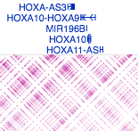
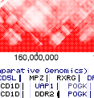

HiGlass
Building a multi-resolution, web-based, Hi-C data display
Peter Kerpedjiev
Gehlenborg Lab
Harvard Medical School
- What?
- Why?
- How?
- Demo
- Statistics
- Summary
- Acknowledgements
- What?
- Why?
- How?
- Demo
- Statistics
- Summary
- Acknowledgements
What are we building?
Multi-resolution |
Web-based |
Hi-C Data Display |
- What?
- Why?
- How?
- Demo
- Statistics
- Summary
- Acknowledgements
|
|
Juicebox |
|
 |
WashU Epigenome Browser |
|
 |
Interactive HiC Browser |
We need fast, versatile and usable components that can be placed anywhere on a web page.

Effortlessly pan and zoom

Access viewer from a web page

Zoomable lines

Zoomable bars

Zoomable gene annotations

Zoomable everything

(Nearly) Immediate data loading
- What?
- Why?
- How?
- Demo
- Statistics
- Summary
- Acknowledgements
- Data resides on the server
- Visualization resides on the client
Elasticsearch (a database system) stores a collection of tiles
Each tile contains the values that can be seen on the screen at a particular zoom level and location

{
"tile_value": {"max_value": 53137.01228744652, "min_value": 0.0,
"dense": [0.0, 0.0, 0.0, 0.0, 0.0...[65526 more values]...
1639.6605, 2564.1854, 7815.50706, 27623.40794, 0.0],
},
"tile_id": "3.2.2"
}
Eliminate Elasticsearch and serve directly from cooler and/or Hi-C files.
The browser converts this tile:
[29.0285, 27.97826,... 36.40484, 21.0694]
To

Or

Too much data to display at once. (1K Hi-C dataset is nearly 10 gigabytes)
Solution
Only request visible tiles.
Only request visible tiles.
Browser keeps track of:
- Visible Zoom Level (0 to 14 for 1K Hi-C data)
- Visible X range (1 to 3 billion)
- Visible Y range (1 to 3 billion)
And requests data only for visible areas


- What?
- Why?
- How?
- Demo
- Statistics
- Summary
- Acknowledgements
For the Rao et al 1KB resolution data set (GM12878 cell line):
- 2.2 billion contacts
- 15G raw data size (gzipped)
- 80M tiles
- 14 zoom levels
- 30G tileset size
HiGlass is a fast, usable, versatile, web-based tool for viewing and comparing large genomic datasets.
- Dynmically gneerating tiles from cooler or HiC files
- User data upload
- Better handling of normalization
- Nils Gehlenborg
- Burak Alver
- Nezar Abdennur
- Kasper Dinkla
- Hendrik Strobelt
- Alaleh Aazhir
- Nikhil Kumar